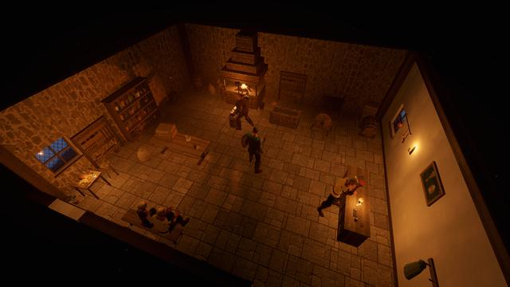
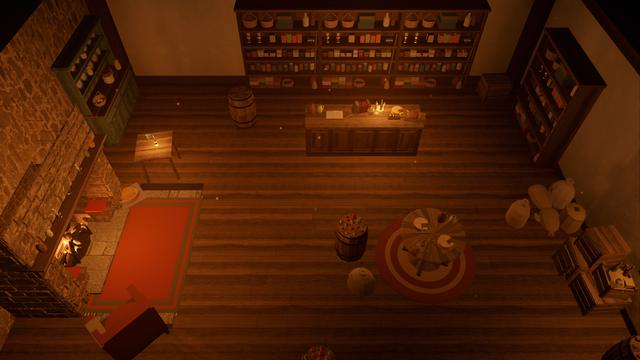
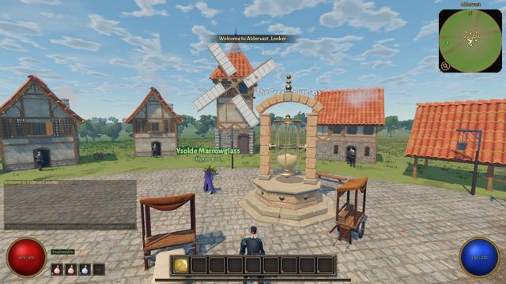
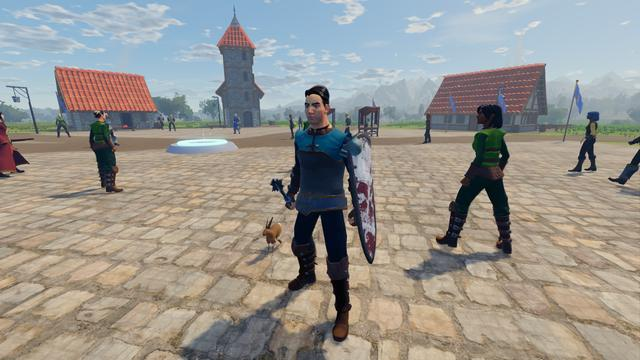
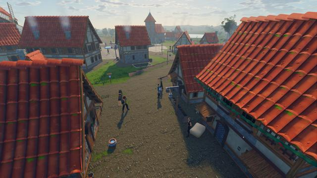
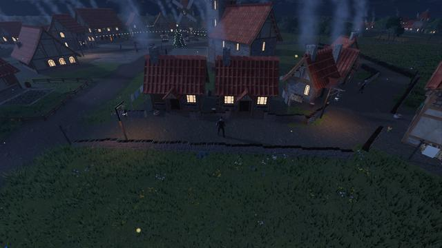
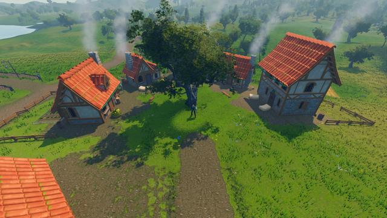
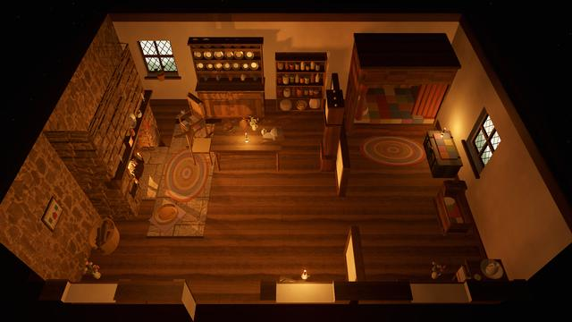
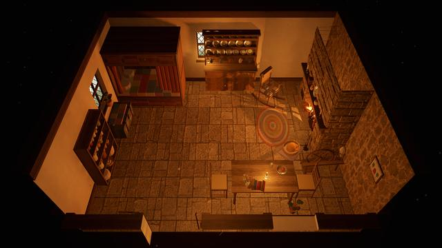

- Title
- Blacksmith
- Role
- Blacksmith
- Trains
- Smithing
- Quests
- Leather and Iron
“Bring me ore and I'll bring you an edge.”
“The forge never sleeps. Neither do I, much.”
- Title
- Merchant
- Role
- Merchant
- Quests
- The Merchant's Road
“Potions, scrolls, glyphs. If you can pay, I can sell.”
“Careful with the cheap phials. They fizz.”
- Title
- Captain of the Watch
- Role
- Quest giver
- Faction
- The Lantern Compact
- Quests
- The Restless Dead, The Hollow Crypt, A Question of Mercy, Bounty: Vale Vermin
“The crypt east of town has been stirring. My guards won't go near it.”
“Steel and lantern-light. That's all the Hollow respects.”
- Title
- Innkeeper
- Role
- Innkeeper
“Warm bed, warm stew, cold ale. Pick two.”
“Rest here a while, and you'll fight better for it.”
- Title
- Apprentice Smith
- Role
- Blacksmith
- Sells
- The smith's stock, and breaks down gear you don't want for its iron
- Indoors
- Inside Brannoc's Forge
“Uncle Brannoc's out front telling folk about ore. I'm the one who hammers it.”
“Mind the trough, it bites. Everything on the racks is for sale, and the hot iron isn't.”
“Bring me what you don't want and I'll break it down for the iron.”
“Stand by the forge a while if you're cold. Nobody's ever been cold in here for long.”

- Title
- Shopkeeper
- Role
- Merchant
- Sells
- Mining Pick, Skinning Knife, Herbalist's Sickle, Fisher's Rod, Nightcrawlers, Smith's Whetstone, Armourer's Plate, Scroll of Seeing, and phials up to five levels above yours
- Indoors
- Inside Thistledown's Sundries
“Gran Wila does the selling in the square. I do the counting in here.”
“Picks, knives, sickles, a rod and bait, and phials for the road. Weighed fair, every one.”
“The apples are for selling, not for sampling. Mostly.”
“Warm yourself by the fire if you like. The cat won't move, but she'll share.”

- Title
- Stablemaster
- Role
- Stablemaster
“A good horse is worth ten swords on the road.”
“She'll carry you anywhere, so long as there's grass at the end.”

- Title
- Enchanter
- Role
- Enchanter
- Trains
- Enchanting
“Bring me Lattice Dust and I'll weave a little more into your gear.”
“Imbuing is patient work.”
- Title
- Battlemaster
- Role
- Battlemaster
“The Shattered Hall wants fighters. Lantern or Thorn, it makes no difference to the stones.”
“Hold the hearths, come back with honour, and I'll see you armed for it.”
- Title
- Outfitter
- Role
- Outfitter
- Quests
- Cut Bolts
“Wear what keeps you alive. Look like whatever you please.”
“Anything you've ever worn, I can make your gear look like. A stitch here, a dye there.”
- Title
- Fisher
- Role
- Fishing trainer
- Sells
- Fisher's Rod, Nightcrawlers, Glimmer Lure, Grilled Herring, Reedbank Chowder
“Mirrorpool's full of trout, and the Silverrun has char if you've patience.”
“Cook what you catch over a fire. A full belly fights better.”
- Title
- Horologist
- Role
- Horologist
- Keeps
- The Great Hourglass and hands out Hourglass Sigils
“Every hall under Aldervast keeps its own time. Turn a sigil in my glass and the sand keeps yours.”
“The omens shift with the week: hardened halls one week, haunted the next. The sand doesn't care which.”
“Beat the glass and your sigil burns brighter. Fall behind it and it dims. That's the whole of the craft.”

- Title
- Miller
- Role
- Quest giver
- Faction
- The Lantern Compact
- Quests
- The Stopped Mill
“You don't hear a mill till it stops. Then you hear nothing else.”
“Flour in my hair since I was six. My wife says I was born grey.”
- Title
- Sexton
- Role
- Quest giver
- Faction
- The Lantern Compact
- Quests
- Wether Down
“Two hundred graves I've dug in this vale, and filled every one. Nobody's climbed out of mine.”
“The dead aren't the frightening part. It's the ones who won't stay that way.”
- Title
- Flax-Grower
- Role
- Quest giver
- Faction
- The Lantern Compact
- Quests
- The Flax Field
“Flax wants a cool wet summer and a dry fortnight at the end of it. It's had neither, and now this.”
“Linen lasts. Your grandmother's sheets will see your grandchildren born, if they were mine.”
- Title
- Orchard-Woman
- Role
- Quest giver
- Faction
- The Lantern Compact
- Quests
- Coddle's Orchard
“You plant pears for your heirs and apples for yourself. I planted both and I'm still here.”
“An old tree knows more about weather than any almanac. It just tells you a year late.”
- Title
- Fair-Warden
- Role
- Quest giver
- Faction
- The Lantern Compact
- Quests
- The Fair Field
“Three days a year this village is the middle of the world. The other three hundred I sweep up after it.”
“Never buy a horse at a fair, nor a ribbon after dark. Everything else is fair game, as they say.”
- Title
- Host of Lanternfast
- Role
- Quest giver
- Faction
- The Lantern Compact
- Quests
- Lanternfast: Light the Way, Lanternfast: The Unlit, Lanternfast: Gifts for the Hearths, Lanternfast: The Old Chandlery
“Lanternfast, friend! The longest nights of the year, and every hearth lights a lantern against them.”
“The first lantern the Compact ever lit burned here, in Harrowford. We keep the feast where it began.”
“Mind the Unlit after dark. They come for the light. Drive them off and the lanterns hold.”
- Title
- Candlewright
- Role
- Merchant
“Candles for the feast, and the Long Night's garb for those who keep it.”
“I don't take gold at Lanternfast. Bring me candles: Hesper's tasks earn them, and so do the Unlit.”
Keeper of Small Creatures - Title
- Keeper of Small Creatures
- Role
- Merchant
“Every one of these was found, given, or followed somebody home. Mind the piglet.”
“They'll go with anyone who'll have them. Take one and it's yours, and your kin's, for good.”

- Title
- Baker
- Role
- Townsfolk
“Mind the step, it's warm. Everything in here is warm. The oven hasn't been cold since Midwinter.”
“Hearthloaf, twist, and a seed cake if you're quick. The mill boys take the rest.”
“Flour from Millbrook, honey from the Lisswen hives, salt from the coast. The rest is patience.”
“I'm up before the lamps go out. Somebody has to be, or the whole village wakes to no bread.”

- Title
- Tailor
- Role
- Townsfolk
“Hold still, I'm only looking. That cloak has been mended by someone with more hope than thread.”
“Thimble's my cat, before you ask. She sits in the window and judges the hems that go by.”
“Good wool from the vale, a fair dye, and a seam that'll outlast the wearer. That's the trade.”
“Come back when the evenings draw in. Everyone wants a warmer coat the week the frost comes.”
- Title
- Cooper
- Role
- Townsfolk
“Oak staves, ash hoops, and a fire inside to bend them. A barrel's a cage for wet things.”
“The Hare takes six a season. Ned swears they go dry on their own. I've my doubts.”
“Listen to that ring. A good cask sings when you knock it. A bad one only grumbles.”
“Careful round the yard, the stack shifts in the wind. I lost a cat to it once. Found him in spring, cross as anything.”
- Title
- Villager
- Role
- Townsfolk
“Bell Lane, for the chapel bell. You hear it in every kitchen on the lane, and you learn to sleep through it.”
“We're close-built up here. Close enough to borrow sugar through the window, if you've a long arm.”
“The sexton comes by at dusk to see the lamps are lit. Never misses. Never says why.”
“Mind old Hetty's cat. It thinks the lane is its own, and the lane mostly agrees.”

- Title
- Villager
- Role
- Townsfolk
“My grandfather planted that oak's grandmother. Or he said so. He said a great many things.”
“Sit a while. The green's for sitting on. The rest of the village is for walking through.”
“When Lanternfast comes we hang the little lamps in the oak. You can see them from the north road.”
“Fernlows next door have the best kitchen on the green. Knock and they'll likely feed you.”

- Title
- Of Hearth Green
- Role
- Villager
- Indoors
- Inside The Fernlows' Cottage
“Come in, come in, and mind the cat. Tobin's in from the hedges and the bread's nearly proved.”
“There's broth in the pot if you've not eaten. Sit by the fire and get the cold out of your hands.”
“Da's been in that rocker since harvest. He says it rocks him a bit nearer the fire every year.”
“Little Wren's asleep through there, so soft feet past the bedroom door, if you please.”

- Title
- Beekeeper
- Role
- Villager
- Indoors
- Inside Hetty Rushby's Cottage
“Shut the door behind you, dear. The bees don't need to hear our business.”
“Forty summers I've kept the hives at the bottom of Bell Lane. That's my honey on the shelf, every jar of it.”
“Sit a while. The kettle's always warm, and so is the cat, if she likes the look of you.”
“When it rains like this the whole lane hurries past my window. I count the hats.”
